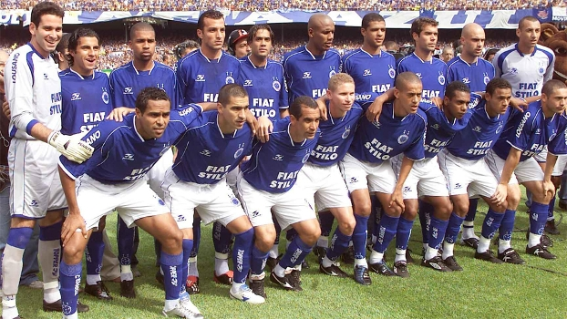
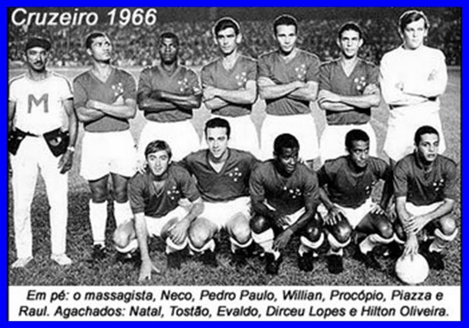

2003
Goleiros: Gomes Arthur Moraes André Doring; Laterais direitos: Maurinho Maicon; Zagueiros: Cris Edu Dracena Luisão Marcelo Batatais Thiago Gosling Irineu Gladstone; Laterais esquerdos: Leandro dos Santos; Volantes: Augusto Recife Felipe Melo Maldonado Jardel Itaparica Márcio Hahn Paulo Miranda Claudinei Luís Martinez; Meias: Alex Marcinho Zinho Wendel Sandro; Atacantes: Aristizábal Deivid Marcelo Ramos Alex Alves Alex Dias Jussiê Mota Márcio Nobre Kanu; Técnico: Vanderlei Luxemburgo
1966
Time titular: Raul; Pedro Paulo, Willian (Fontana), Procópio e Neco; Wilson Piazza (Zé Carlos) e Dirceu Lopes; Natal, Tostão, Evaldo e Hilton Oliveira.
2013
Goleiros: Fábio Rafael Igor Élisson; Laterais direitos: Ceará Mayke; Zagueiros: Léo Victorino Wallace Bruno Rodrigo Dedé Paulão; Laterais esquerdos: Egídio Éverton; Volantes: Lucas Silva Leandro Guerreiro Tinga Henrique Nilton Souza; Meias: Alisson Éverton Ribeiro Élber Ricardo Goulart Júlio Baptista; Atacantes: Borges Dagoberto Martinuccio Lucca Vinícius Araújo Willian Luan Anselmo Ramon; Técnico: Marcelo Oliveira